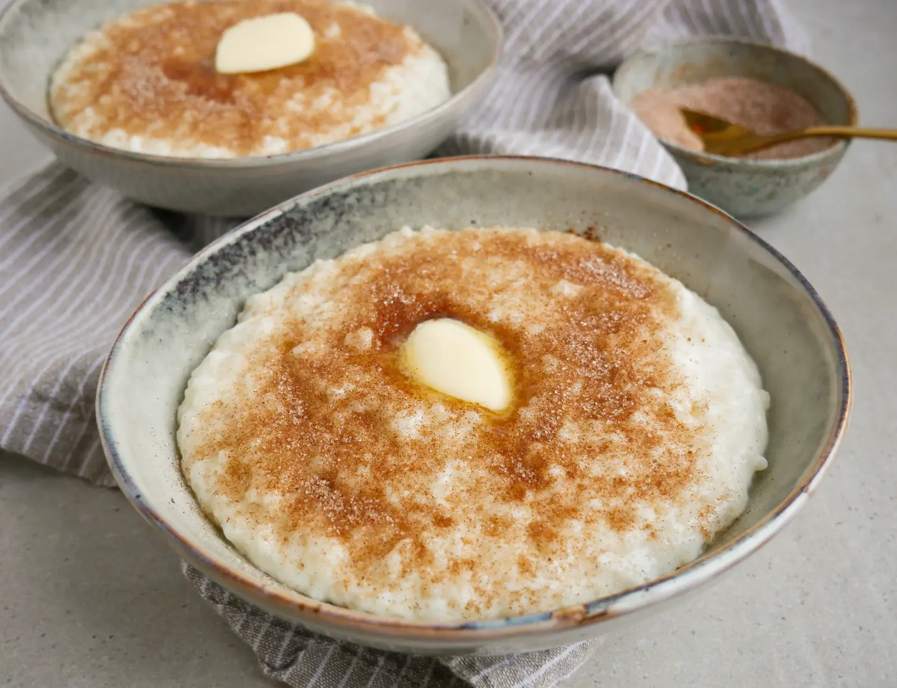

Risengrad

Risengrød is part of the Nordic Christmas tradition as a dinner dish.
Rice boiled with milk and a little sugar to form porridge.
It is served warm with butter and cinnamon mixed with sugar.
Ingredients
- Water 3 dl
- Pama porridge rice 180 g
- Whole milk 1 liter
- Salt 2 pinches
- Sugar 4 tablespoons
- Cinnamon 2 teaspoons
- Butter 50 g
Directions
- Bring water and rice to a boil in a deep pot. Boil the rice at steady heat and with active stirring for approximately 2 minutes.
- Add milk and bring the concoction to a boil. Boil the pot at low heat, still with active stirring for approximately 10 minutes.
- Put on lid and boil for approximately 30 minutes. Stir the pot often. If the porridge seems too thin, boil it for another 5-10 minutes.
- Add salt.
- Mix sugar and cinnamon to form cinnamon sugar in a bowl or container.
- Serve warm with cinnamon sugar on top and a bit of butter in the middle.
- Enjoy!